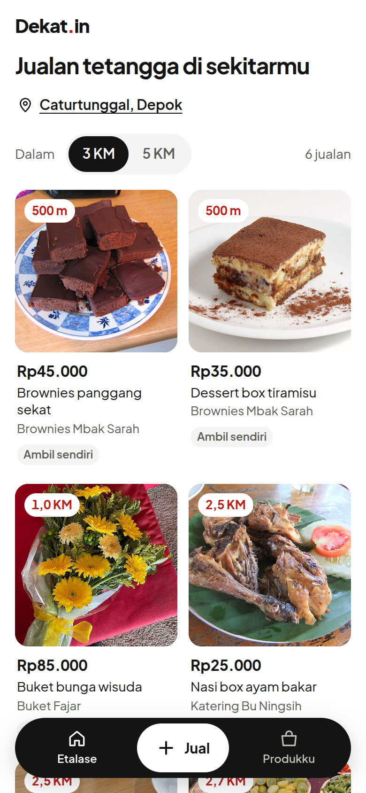
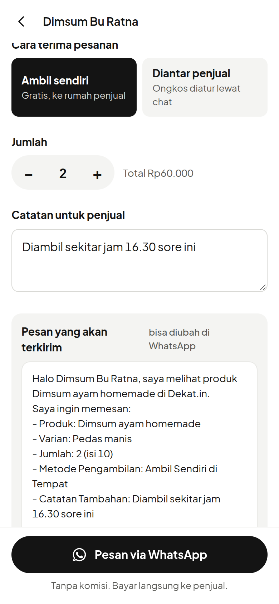
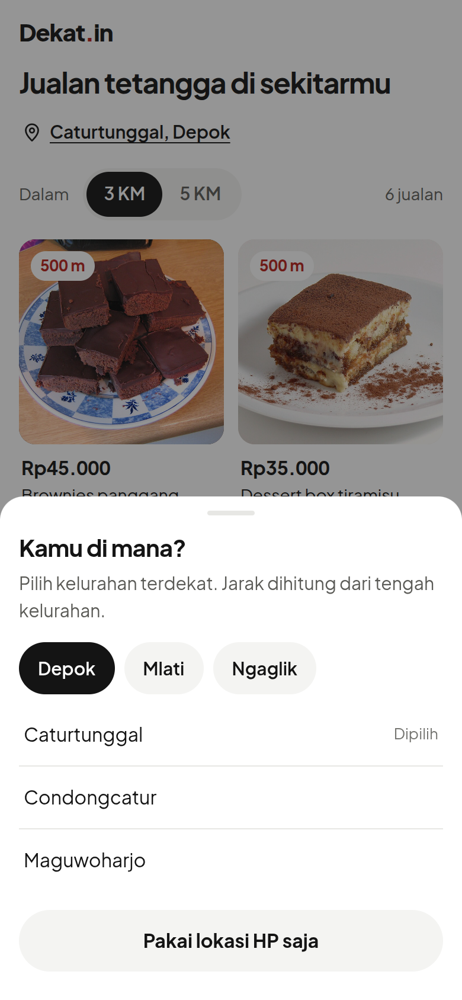
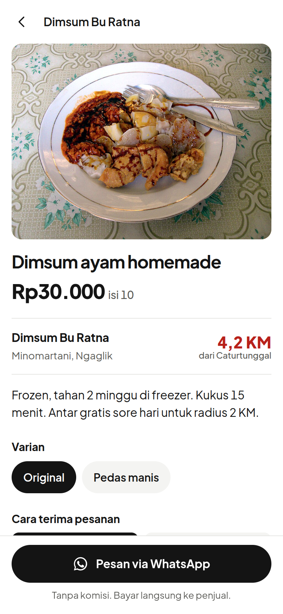
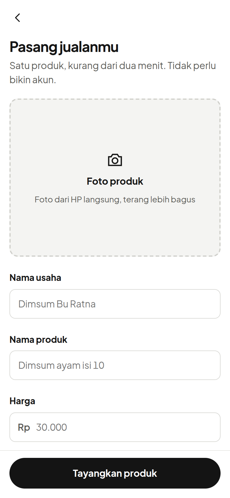
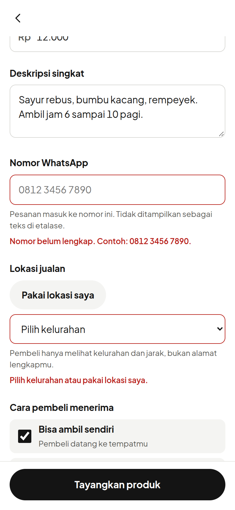
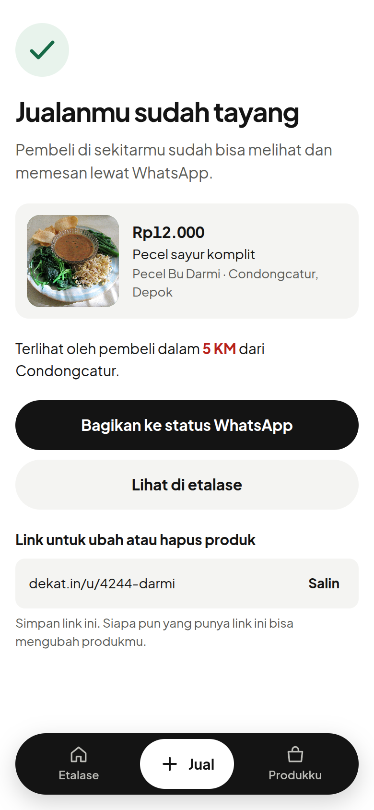
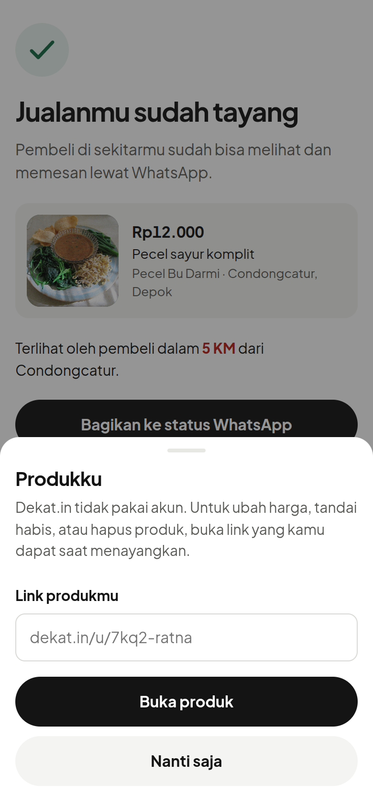
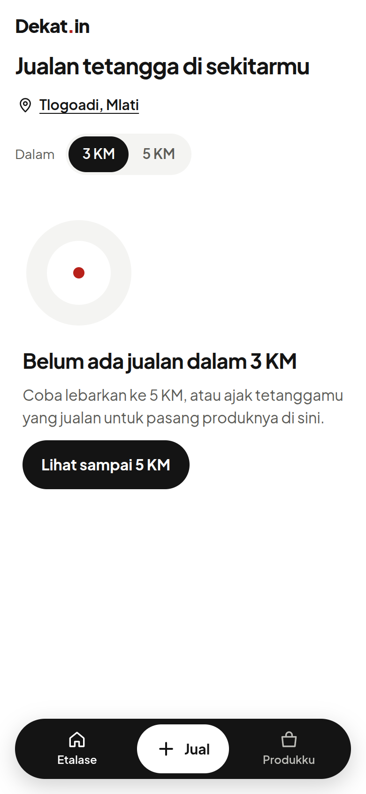
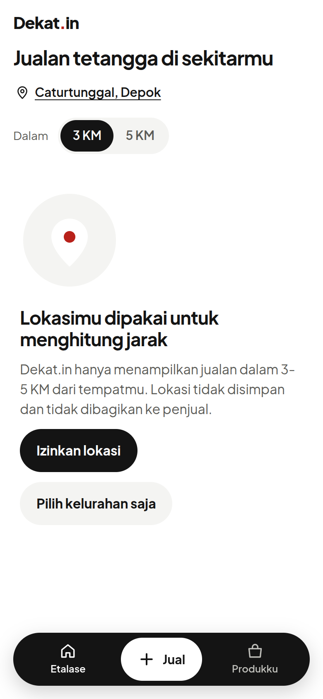

Etalase digital hyperlocal: pembeli menemukan jualan rumahan tetangga dalam radius 3–5 KM, lalu memesan langsung lewat WhatsApp. Tanpa komisi, tanpa ongkir kurir pihak ketiga, tanpa akun penjual.


Pembeli langsung melihat jualan tetangga yang diurutkan dari jarak terdekat. Jarak (merah) adalah satu-satunya warna aksen karena itulah inti produk. Radius bisa diganti 3 KM atau 5 KM. Navbar mengambang: Etalase, Jual, Produkku.

Muncul kalau izin GPS ditolak atau pembeli ingin ganti titik. Pilih kecamatan (Depok, Mlati, Ngaglik), lalu kelurahan. Jarak dihitung dari tengah kelurahan.

Foto, harga per satuan, penjual, kelurahan, dan jarak dari lokasi pembeli. Varian dipilih dengan chip.
Pembeli memilih ambil sendiri atau diantar, jumlah, dan catatan. Pratinjau pesan ikut berubah, lalu tombol membuka wa.me dengan pesan terisi otomatis. Tanpa komisi, bayar langsung ke penjual.

Satu kolom, tanpa akun. Foto, nama usaha, nama produk, harga, deskripsi, nomor WhatsApp, lokasi, dan cara terima.

Kesalahan baru muncul setelah penjual menekan Tayangkan, tepat di bawah kolomnya, dan fokus pindah ke kolom pertama yang salah.

Ringkasan produk, jangkauan 5 KM, tombol bagikan ke status WhatsApp, dan link rahasia untuk ubah atau hapus produk (pengganti akun).

Karena tanpa akun, penjual membuka produknya lewat link rahasia yang didapat saat menayangkan.

Tidak ada jualan dalam 3 KM: ajakan melebarkan ke 5 KM atau mengajak tetangga berjualan.

Menjelaskan kenapa lokasi dibutuhkan dan bahwa lokasi tidak disimpan. Ada jalan keluar tanpa GPS.